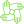

<nav class="navbar navbar-expand-lg navbar-dark bg-dark">
    
        <a class="navbar-brand" style="margin-left: 10px" href="/">Receive&Help</a>
    <button class="navbar-toggler" type="button" data-toggle="collapse" data-target="#navbarSupportedContent" aria-controls="navbarSupportedContent" aria-expanded="false" aria-label="Toggle navigation">
      <span class="navbar-toggler-icon"></span>
    </button>
  
    <div class="collapse navbar-collapse" id="navbarSupportedContent">
      <ul class="navbar-nav mr-auto">
        <li class="nav-item">
          <a class="nav-link"  [routerLink]="['/']"> Strona Domowa<span class="sr-only">(current)</span></a>
        </li>
        <li class="nav-item">
          <a class="nav-link"[routerLink]="['/ranking']" >Ranking</a>
        </li>
        <li class="nav-item">
          <a class="nav-link"  [routerLink]="['/map']">Mapa Pomocy</a>
        </li>
        <li class="nav-item">
          <a class="nav-link" href="http://www.um.kielce.pl/">Miasto Kielce</a>
        </li>
        <li class="nav-item">
          <a class="nav-link" [routerLink]="['/about']">O Projekcie</a>
        </li>  
      </ul>
      <!-- ====================================================================== -->
      <button class="btn btn-outline-danger mr-sm-2" (click)="logout()" type="submit">Wyloguj</button>
  
  
      <div class="dropdown">
        <div *ngIf="notifications; else empty">
          <i class="material-icons">notifications_active</i>
          <div class="dropdown-content">
            <p *ngFor="let notification of notificationsList">{{ notification.title }}</p>         
          </div>
        </div>
        
      </div>
  
    </div>
  </nav>